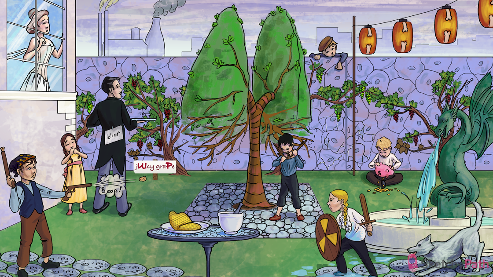

Restrictive corset: interstitial lung diseases (e.g. idiopathic pulmonary fibrosis (IPF) produce restrictive lung disease
Fibrotic pulmonary tree: pulmonary fibrosis (a component of many of the interstitial lung diseases)
“Idiot”: Idiopathic pulmonary fibrosis (IPF) is the prototypical fibrosing disorder
Repeating red grapes: IPF is associated with repeated cycles of alveolitis (of unknown origin)
Cracks in epithelial stones: recurring inflammation damages type 1 and type 2 alveolar cells in the alveolar epithelium
Dumping coins: damaged type-1 pneumocytes release cytokines → TGF-beta-1 activates fibroblasts → pulmonary fibrosis
Patchy distribution of grapevines: IPF is associated with a patchy fibrosis (due multiple fibroblastic foci) on histology
“jUIcy graPe”: usual Interstitial pneumonia (UIP) is the patchy fibrotic histology seen in IPF
Cobblestone patio: IPF is associated with a cobblestone appearance of the pleural surface (retraction scars along the interlobular septa)
Bare lower branches: fibrotic changes in IPF appear as bilateral or diffuse reticular opacities, most prominent in LOWER LOBES (on X-ray or CT)
Branches under shirt: the opacities of IPF distribute along SUB-PLURAL regions and interlobular septa
Honeycomb treat: alveoli collapse and dilated proximal airways in IPF appear as “honeycombing” on CT and gross pathology
CAP gun going “BOOP”: cryptogenic organizing pneumonia (COP) also known as bronchiolitis obliterans organizing pneumonia (BOOP) is another cause of pulmonary fibrosis
Plug in gun: COP is associated with intraluminal plugs of granulation tissue leading to alveolar collapse and consolidation → alveolar collapse and consolidation
Sudden gunfire: COP causes acute onset of cough and dyspnea
fire bandana: COP presents with fever and weight loss
Moon face: COP can be treated with oral corticosteroids
Mortar and pestle: many drugs (e.g. amiodarone, bleomycin, methotrexate) can cause pulmonary fibrosis
Fibrous radiation shield: patients with history of thoracic radiation can develop radiation pneumonitis and pulmonary fibrosis
Wet pleural shirt: radiation pneumonitis can present with pleural effusion
Moon face: radiation pneumonitis can be treated with oral corticosteroids
Lupus wolf: collagen vascular diseases (e.g. lupus) can cause pulmonary fibrosis
Scaly dragon: systemic sclerosis can cause pulmonary fibrosis
Inflamed joint lanterns: rheumatoid arthritis can cause pulmonary fibrosis